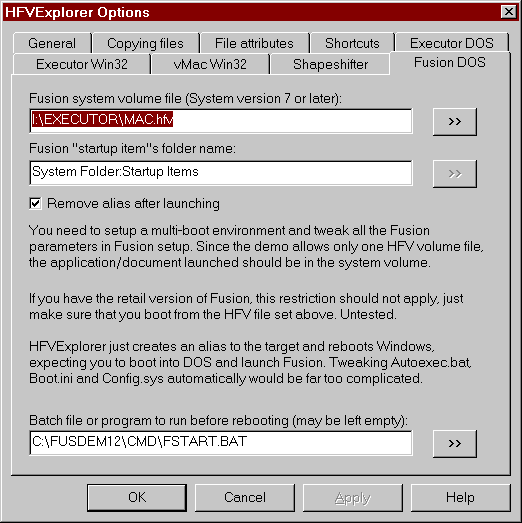
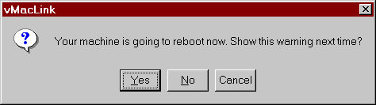

Fusion DOS
Fusion launching differs from the other emulators in that Fusion only works in real DOS mode, and therefore the computer must be rebooted. When you launch to Fusion (either from a shortcut or directly from HFVExplorer), a following dialog box will appear:

In case you don't want to reboot, click Cancel. Otherwise click Yes to reboot and show warning next time, or No reboot but disable the warning from now on.
Fusion system volume file:
Should be the HFx file path where you boot Fusion from.
Fusion "startup item"s folder name:The default value is usually fine. Modify if you have renamed your system folder.
Remove alias after launching:Described here.
Batch file or program to run before rebooting:This is optional. It gives you an opportunity to do some automatic tasks before the computer is shut down and rebooted.